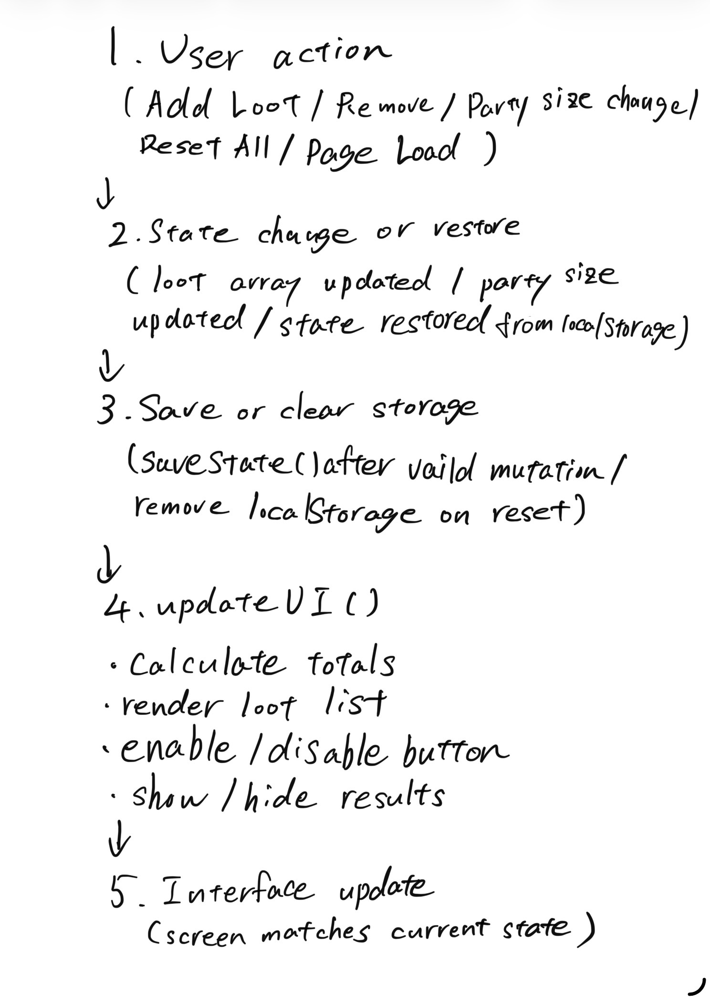

Party Setup
Add Loot
Loot List
Split Loot
Logic Explanation
The loot array and party size are the single source of truth, so the screen always reflects what the state currently contains. I added a quantity property to each loot object so the total value uses value × quantity rather than just value alone. All calculations and rendering happen inside updateUI(), which keeps the system consistent and prevents duplicate logic. State changes are saved to localStorage as one object, and the app restores that object on load before running updateUI() so the interface matches the saved state. JSON.stringify() turns the state object into text for storage, and JSON.parse() turns it back into data on restore. While debugging, I set a breakpoint in restoreState(), inspected the restored loot array and party size, and confirmed that updateUI() runs only after valid state is reconstructed. The interface is controlled by state: when data is invalid or missing, results are hidden and the Split button is disabled; when state becomes valid, those UI elements appear and become enabled. Conditional logic prevents invalid state from affecting the display and keeps totals from showing when data is incomplete.
